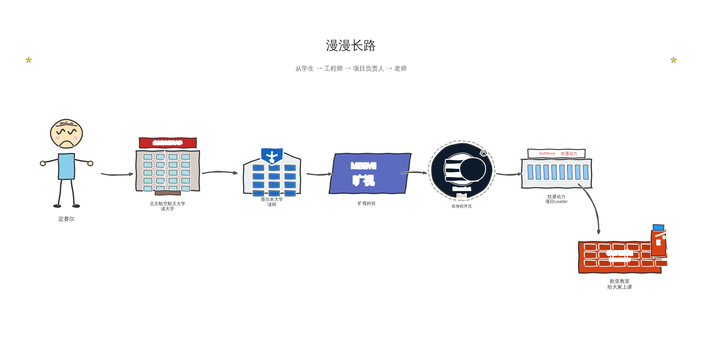

你好，我是 定赛尔，目前在本校从事软件工程相关课程的教学与实践指导工作。
| 项目 | 信息 |
|---|---|
| 办公地点 | 西B 210 |
| 电话 | 15349251783 |
| 邮箱 | dingsaier@eurasia.edu |
从学生，到工程师，再到项目负责人，如今回到课堂——下面是我一路走来的简要轨迹：

本仓库 Pro Skill Backend 是面向大家的全栈实训项目。学完后，你应能掌握：
薪资与 城市、学历、面试表现、项目深度 差异很大。下表将岗位与 月薪（税前） 合并列出；互联网 / AI 大厂多为 13～16 薪，校招更常谈 年包总包。
| 阶段 | 常见岗位 | 普通企业 | 互联网大厂 | AI / 硬科技大厂 |
|---|---|---|---|---|
| 实习 | Java 后端实习、全栈实习、AI 应用 / 平台实习 | 2k～6k | 5k～12k | 6k～15k |
| 应届 / 初级（0～1 年） | Java / Spring Boot 后端、全栈、Web、业务系统开发 | 6k～12k | 15k～28k | 18k～35k |
| 有项目与 1～3 年经验 | 中高级后端、全栈、业务平台 / AI 应用开发 | 10k～20k | 25k～45k | 30k～55k |
实习或校招阶段，有完整项目（能讲清业务、接口、数据库、测试和 Docker 部署）比只会背语法更有竞争力；冲 大厂 / AI 厂 通常还需要 算法与基础、竞赛或高质量 GitHub、英语与沟通 等加分项。
能把 Spring Boot + MyBatis + 前端联调 + 测试 + Docker 部署 做成可演示的项目，通常更容易拿到偏上区间的 offer；持续补 Redis、消息队列、Linux 等，有利于往中高级后端发展。